기본적인 용어 정리
네트워크
- 컴퓨터, 라우터, 스우치 등 여러 장비들이 서로 유/무선 으로 연결되어 데이터를 공유하는 시스템
- 네트워크는 단순히 내부 망(이더넷, 인트라넷) 끼리의 통신이나, 외부 네트워크 끼리 통신하는 것 모두를 포함
이더넷
- 네트워크 기술의 일종.
- 공유기, 허브에 연결되어 여러 시스템들이 통신 가능한 네트워크 구조
인터넷
- 전 세계 네트워크가 서로 연결 되있는 전체 네트워크에 집합
- 따라서 외부 네트워크와의 통신 그 자체를 말함
WAN
광역 네트워크
- 인터넷 게이트웨이로 라우팅되는 네트워크를 보통 WAN이라고 부른다
- 보통 인터넷 통신을 위한 UTP 인터넷 케이블을 WAN 케이블 또는 업링크 케이블 이라 부르기도 한다
네트워크 인터페이스
- 물리적인 렌카드 (사실상 하나의 PC)
- 보통은 렌포트가 하나인데 요즘 좋은것들은 2개씩 존재하는것도 있다
백본 망
- 소형 네트워크들을 묶어 대규모 파이프라인을 통해 다른 네트워크들의 집합과 연결 한 네트워크
- 해저 케이블을 비롯한 광케이블을 등을 사용하여 극도에 대역폭으로 전송이 이루어 진다
- 전세계 네트워크에 최상단의 위치하는 Tier 1 네트워크도 이런 형태로 구성되어있다
TCP/IP 계층
모든 네트워크 장비가 실제 물리적인 데이터 전송이 되기 전까지의 과정들을 추상화 한것
- 이론상 존재하는 OSI 7계층을 실제 구현한 것
- 보통은 컴퓨터 네트워크 통신에서는
TCP/IP로 많이 설명하는데 다른 네트워크 장비들은 설명하기 쉽다고OSI 7으로 설명되는 경우가 많다
구조
응용계층설명: 여긴 그냥 개발자가 개발하기 나름프로토콜: HTTP, FTP, SSH
전송계층설명: 데이터 전송할 수 있도록 해주는 계층프로토콜: TCP, UDP
- 인터넷 계층
설명: IP 주소를 설정하여 목적지를 지정프로토콜: IP, Port
- 네트워크 인터페이스 계층 (NIC 계층)
설명:- 실제 물리적인 전송을 담당하는 계층
- PC에 경우 보통은 공유기와 연결됨으로 공유기의 MAC 주소를 추가해준다
프로토콜: MAC, 이더넷
오해하면 큰일나는 것
- 각 계층에 역할(구현)은 네트워크 장비마다 다르다
- 보통 설명할때 전송하는 PC 입장에서 설명해놓은 경우가 많다
- 모든 네트워크 장비가 TCP/IP 계층을 따르긴 하는데 아래 설명한것 처럼 각각이 어떤역할을 하는지는
컴퓨터라는 네트워크 장비를 예를 들어 설명한거다
- 예를들어 라우터는 TCP/IP 모델에 L2(인터넷) 계층에서 작동한다
이 말은 라우터는 TCP/IP 계층 구조에서 인터넷 계층 까지만 구현이 되어있는거다
- PC가 NIC 계층에서 물리적으로 전송되어 그 정보를 라우터가 받았다 치자
네트워크 인터페이스 계층:- 라우터는 PC NIC계층에서 온 프레임해더에 MAC 주소와 자신의 MAC 주소를 비교하게된다 여기서 동일한 MAC 주소가 나오면
인터넷 계층:디캡술레이션과정을 거쳐 최종 목적지IP 주소를 확인하게 된다- 그 IP 주소를 라우팅 테이블을 참조하여 다음 목적지 주소를 확인 하고
네트워크 인터페이스 계층:- 다음 목적지 MAC 주소를 결정하여 다시
프레임으로 캡슐레이션 해서 전송하게 된다
- 다음 목적지 MAC 주소를 결정하여 다시
OSI 7계층 | TCP/IP 계층
| # | TCP/IP | 역할 | OSI 7 | 전송단위 |
|---|---|---|---|---|
| L1 | 네트워크 인터페이스 | MAC, RS-232C | 물리 | 프레임 |
| L2 | 데이터 링크 | |||
| L3 | 인터넷 | 라우팅, IP, ICMP, ARP, IP, RIP, OSPF | 네트워크 | 패킷 |
| L4 | 전송 | TCP, UDP, Port | 전송 | 세그먼트 |
| L5 | 세션 | |||
| L6 | 표현 | |||
| L7 | 응용 | HTTP, SSH, FTP | 응용 |
수신자PC 입장에서 본 TCP/IP 전송 구조 & 단위
인캡술레이션: 데이터 전송시 각계층을 지날때 마다 각자 해더가 하나씩 붙어가는것디캡술레이션: 데이터 수신시 각 계층을 지날때 마다 캡슐화된 데이터를 복원하는 것

소켓 스트림 (응용계층)
- 아래 전송계층단은 OS 커널영역 인데 이걸 파일형태로 추상화 해서 개발자가 사용할수 있게끔 인터페이스화 한게 소켓이다
- 우리가 쓰는 WinSocket 이나 이런건 그 인터페이스의 구현체 인거고
- 사실상 모든 네트워크 데이터는 소켓스트림 이다
세그먼트 (TCP 계층)
- 소켓에서 날라온 데이터가 일정크기 만큼 잘려서 TCP 단에 들어오게 된다 (세그먼트화)
- 그럼 그 잘린 데이터에 TCP 해더를 붙이게 되면 이게 세그먼트다
- 세그먼트 관점에서는 TCP해더 쪽이
해더, 데이터 영역이페이로드
- 세그먼트 관점에서는 TCP해더 쪽이
- 그럼 만들어진 세그먼트를 IP단에 전송하면 여기 작업은 끝난다
MSS (Maximum Segment Size)
최대 세그먼트 사이즈
- 해당 사이즈는 패킷에 크기 에 기초에서 잘려지는데 당연하지만 패킷에 크기보다 작음
- IP 해더 20바이트, TCP 해더 20바이트 해서 MSS의 최대 크기는 패킷크기-40 이다
패킷 (IP 단)
실제 전송될 데이터 덩어리 패킷은 세그먼트를 인터넷에서 전송가능한 형태로 변환한게 패킷이다
- TCP 단에서 전달받은 세그먼트+IP 해더 이것이 패킷이다
- IP 해더 =
해더, 세그먼트 =페이로드 - 페킷을 TCP 단으로 보내는 경우 세그먼트를 디켑슐레이션 과정을 통해 TCP해더를 얻게된다
- 즉 세그먼트=패킷에 페이로드 영역이다 라고 볼 수 있다
MTU (Maximum Transmission Unit)
패킷에 최대 크기
- 별일없으면 MTU=1500바이트
- 그니까 하나의 패킷으로 전송가능한 최대 크기는 1500바이트 라는 뜻
- 사실상 해더 제외하면 실제 순수데이터 만으로는 1460바이트가된다
- 더 큰 사이즈를 전송하고 싶으면 위 세그먼트 단계에서 잘게잘게 잘려서 여러 패킷으로 나오게 되어 전송이 된다
프레임 (MAC 주소단)
네트워크가 실제로 데이터를 전송할때 쓰는 단위 이더넷 프레임 이라고 하기도 함
- IP 단에서 전달받은 패킷+ 프레임 해더
- 프레임 해더 =
해더, 패킷 =페이로드 - 목적지, 소스 실제 MAC 주소를 담고 있다
- 여기서 MAC 주소는 최종 전달자가 아니다
- 만약 PC가 공유기(라우터)와 연결되어있다 치면 해당 공유기의 MAC 주소인거다
FCS: 프레임의 무결성을 확인하기 위한 오류 검출 코드- 여기서 IPv4, IPv6 판단이 이루어 진다
소켓 통신
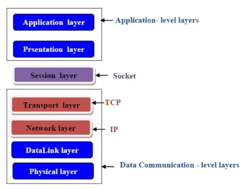
- 네트워크들을 연결하는 하나의 접점을 제공하는 기술.
- 전송계층단은 OS 커널영역 인데 이걸 파일형태로 추상화 해서 개발자가 사용할수 있게끔 인터페이스화 한게 소켓이다
- 모든 네트워크 통신에 기반
- 자체 규격 만드는거 아니면 어떤 통신을 하건 소켓으로 하게 됨
HTTP,FTP,SSH등도 다 내부적으로는 소켓으로 구현- 소켓으로 데이터를 보낼 때
JSON처럼 규격있는 메시지를 보낸다고 생각하면 됨
- 소켓으로 데이터를 보낼 때
작동 원리
- 소켓은 파일이다 보통 그래서 똑같이 파일처럼 스트림을 쓰는데 이때 쓰는게 소켓 스트림
- 전송계층과 응용계층 사이를 연결하여
데이터 전송을 당당 즉 - 그 중간에 작동한다 볼 수 있다
- 에초에
HTTP,FTP,SSH이것들 전부가 소켓통신 기반 - 즉 소켓으로도 규격에 맞는 데이터만 보낸다면 잘 작동함
- 에초에
구현
Windows api같은 OS API를 사용하여 구현이 가능하다- 사실상 개발자가 구현할 수 있는 가장 밑바닥
소켓 기반 프로토콜이 나온 이유?
그냥 소켓으로도 모든 통신이 가능한데 왜
HTTP,FTP,SSH이런 것들이 나왔는지에 대해 생각해 보자면
- 페이지 또는 웹 브라우저 별로 각자 소켓으로 주고받는 메시지가 다르다면?
- 누군가는 요청/응답 동작만 하는 통신에 양방향으로 설정하고 누구는 단방향으로 설정한다면?
- 핼파티 날께 뻔하므로 규칙을 정한 듯
TCP가 UDP보다 느린 이유
패킷의 무결성 확인 과정의 대기
- 서버가 1, 2번패킷을 서버가 보냈다
- 클라이언트가 1,2 번 패킷을 받은 경우 ACK 3 을 보내 “3번부터 보내라” 라는 전송완료 메시지를 보낸다
- 근데 이 과정에서 서버는 ACK3 응답이 올때까지 대기 하게 된다
- 그래서 딜레이가 생기기 때문에 느려진다
TCP 버퍼 윈도우 공간 문제
- TCP 버퍼란 서버에 전송완료된 데이터를 소켓이 Read 하는 임시공간 서버에서 아주 빈도 높게 데이터를 전송하는 경우 소켓이 이를 즉시 Read하지 못 할수있기 때문에 만들어놓은 임시공간이라고 볼 수 있다
왜 문제가 되는가
- 서버가 ACK패킷을 응답받으면 서버는 다음 패킷을 보내야 하는 상황이다
- 수신측 TCP 버퍼쪽에 남은 윈도우 공간이 없으면 보내지 않는다
- 그럼 이때도 또 클라이언트가 TCP 버퍼를 Socket이 읽을때 까지 또 대기타야 한다
해결 방법은?
- 송, 수신 버퍼를 동일하게 잡는다.
- Network 수신속도 < 데이터 읽는 Read 속도
이게 성립해야 한다
- 사실상 네트워크 I/O보다 파일I/O 속도가 느리다면 이건 프로그램을 잘못 짠거라고 생각된다
- 즉 앱을 개발하는데 있어서 네트워크 속도보다 입출력 속도가 더 빠른지 체크하면서 해야한다
HTTP 통신
- 소켓통신에서 양방향 통신을 버린 TCP 단방향 통신
- HTTP 2.0 와서 지원하기 시작함
- 요청/응답 프로세싱을 지님
- 클라이언트가 서버에 요청하면 서버가 해당 작업 후 연결 종료
URL을 통한 요청 분리 가능
구현
HTTP 도 결국은 소켓으로 통신하는 것
클라이언트
POST /userAccount/login HTTP/1.1 Host: swiftapi.rubypaper.co.kr:2029 Content-Type: application/x-www-form-urlencoded account=swift%40swift.com&password=1234&grant_type=password
- 이런 메시지를 소켓 데이터에 담아서 보내면 잘 전달됨
- 응답 후 연결 종료, 단방향 통신 등 이런것만 설정해주면 HTTP Reqeust API 완성
서버
- 클라이언트가 위 데이터를 보내면 해당 구문을
parse하는것으로 가능 /userAccount/login이 부분으로 구분해서Spring이나Nest.js는 어노테이션으로 파싱되고Express.js같은 경우 Callback으로 전달 되는 구조인 듯- 즉 HTTP 요청 구문을 파싱해서 데이터를 받고 다시 응답 데이터를 구성해서 보내게 된다
HTTPS
참고자료
기존 HTTP 에
TLS암호화 프로토콜이 추가된 방식
요약하자면 클라이언트-서버 사이 사용할 대칭키를 안전하게 교환하기위한 프로토콜 통신 과정에서 중간자 공격을 보호한다
TLS 프로토콜 과정
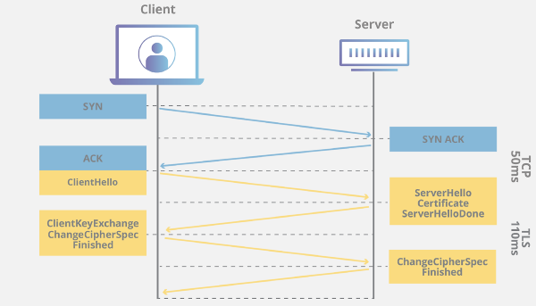
- Client Hello
- 클라이언트가 서버에 연결시도 패킷을 전송
- 클라이언트에서 사용가능한 암호 프로토콜 목록 등과, 인증방식 등을 서버에 전송한다.
- 패킷 내부에
Server Name Indication extension이라는 값이 있는데 이게 현재 인터넷 검열에 사용되는 SNI 필드다.
- Server Hello
- 클라이언트에 대한 응답 패킷을 전송
- 클라이언트가 사용가능한 암호 프로토콜 중 하나를 선택하여 클라이언트에 전송
- Certificate, Server Key Exchange, Server Hello Done
- 서버는 비밀키-공개키 키 쌍을 생성하고, 공개키를 포함한 SSL 인증서를 구성하여 클라이언트에게 전송한다
- 인증서에는 발급기관, 만료기간 등을 포함한다.
- Client Key Exchange, Change Ciper Spec
- 클라이언트는 실제 데이터 전송을 암호화 하기 위한 대칭키를 생성한다. 생성한 대칭키를 서버에서 전달받은 공개키로 암호화를 진행 하여 서버에 전달한다
- Server / Client SSL Handshake Finished
- 서버는 전달 받은 대칭키를 서버에 비밀키로 복호화 하여 통신할 준비를 마친다
- 클라이언트-서버는 생성된 대칭키 기반으로 데이터를 암호화 하여 송-수신 하게된다.
TLS에 키 교환에 대해
보통 비 대칭키에 암호화는 서버-클라이언트 모두 공개키-개인키 쌍을 생성하여 서버는 클라이언트에 자신에 공개키를 전달하고, 클라이언트는 자신에 공개키를 서버에 전송하여 각각에 비밀키로 복호화 하는것이였다.
하지만 속도에 문제로 모든 데이터를 비 대칭키로 암-복호화 하는것이 매우 비효율적이여서 TLS 에서는 서버에 개인키-공개키 만 사용한다
- 서버는 개인키-공개키 키 쌍을 생성하여 공개키를 클라이언트에 전송한다.
- 클라이언트는 임의의 키를 생성하고 생성된 대칭키를 서버에 공개키로 암호화 하여 서버에 전송한다.
- 서버는 암호된 임의의 키를 서버에 비밀키로 복호화 한다
- 서버-클라이인트 모두 해당 대칭키 기반으로 동일한 세션키를 생성하여 (보통은 AES 프로토콜이 사용됨) 해당 세션키로 데이터를 암호화하여 통신이 이루어진다.
즉 데이터에 대한 암호화는 대칭키 방식으로 이루어진다. TLS는 그래서 대칭키를 암호화 하기 위한 프로토콜로 보는것이 합당하며, 이렇게 하므로 효율과 안전성 모두를 챙길 수 있다
다만 TLS에 옵션중 Mutual Authentication 라는것을 활성화 하면 서버 클라이언트 모두 비 대칭키를 사용하는 인증방식을 사용할 수 있다.
SSL과 TLS
결론부터 말하면 SSL에 후속 버전이 TLS 이며 SSL은 현재 사용되지 않는다.
SSL 과 TLS는 현시점에서 용어가 혼용되는 경우가 많은데 그냥 TLS 만 사용한다 생각하면 된다 SSL 인증서에 경우 TLS 인증서 라고 생각하면 된다
인증서와 발급기관
참고자료
X.509규격에 전자 서명 인증서를 사용하여 서버 또는 클라이언트를 인증한다
인증서 발급은 openssl과 같은걸로 누구나 할 수 있기 떄문에 HTTPS 과정중 유일하게 중간자 공격이 가능한부분이 Certificate 과정인데 공격자가 자신이 위조한 인증서를 바꿔치기 한다면 공격자는 위조한 인증서에 발급된 비밀키 정보를 사용하여 피해자에 모든 패킷을 복호화 하는게 가능하다.
때문에 각 브라우저들은 신뢰할 수 있는 인증서 발급 기관(CA)를 지정하여 해당 CA 들이 가진 공개키를 관리하고 있다.
서버가 인증서를 발급 시 서명 정보에는 도메인 주소와 같은 고유한 정보로 만들어진 해시값을 CA에 개인 키로 암호한 정보가 저장되어있다.
클라이언트가 서버에 인증서를 전달 받으면 CA에 공개키로 복호화 하면 하면 CA가 구한 해시값을 얻을 수 있다.
클라이언트는 서버가 했던 방식으로 해시값을 생성하여 두 해시값이 같은 경우 위조되지 않았다 판단 할 수 있다.
인증서 종류
DV: 도메인의 소유권만을 검증OV: 인증서 발급 대상의 실체까지 검증EV: 인증서 발급 대상 조직 심사, 검증, 도메인 승인을 모두 검증
DV 인증서가 제일 싸고 EV 인증서가 제일 비싸다
무료로 발급 가능한 Let's Encrypt의 경우 DV의 해당 한다
물론 EV 가 가장 안전하긴 하겠지만 사실 여기 보안에 그렇게 많은 힘을 쏟아봤자 가격대비 별 의미가 없다.
TCP 연결/해제
3-Way Handshake
TCP 연결 과정
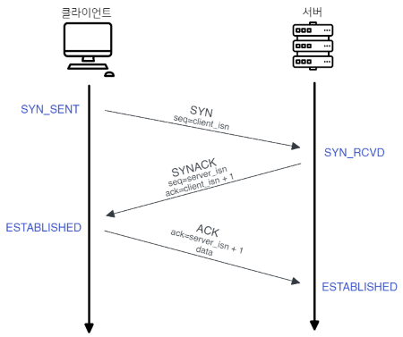
- 클라이언트 → 서버에 접속요청하는
SYN패킷보냄 - 서버 → 클라이언트에 요청을 수락한다는 의미로
ACK+SYN패킷을 보내어 클라이언트가ACK패킷을 응답하길 기다림 (이것을 Receive 상태) - 클라이언트 → 서버에
ACK패킷을 보내어 데이터 송/수신
4-Way Handshake
TCP 연결 해제
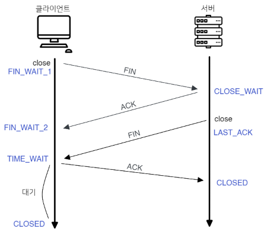
- 클라이언트 → 서버에 연결 종료하겠다는
FIN플래그 전송 - 서버 → 클라이언트
ACK패킷을 먼저 전송하고 통신이 완전히 끝날때 까지 기다림 (이때 서버는TIME_WAIT) - 서버 → 클라이언트 통신이 완전히 끝나면
FIN플래그 전송 - 클라이언트 → 서버에 종료 확인으로
ACK전송
서브넷
IPv4 주소의 소멸을 막기위해 하나의 네트워크를 한번 더 쪼갠 네트워크
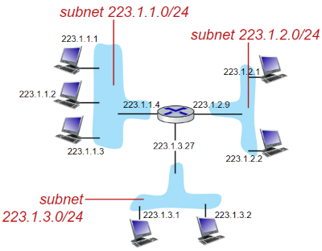
- 할당 받은 IP
192.168.0.1/24에 호스트 부분 0~255를 쪼게서192.168.0.127/25로 네트워크 대역을 추가적으로 만들어 내는 것 - 개인 네트워크에서 쓸 일은 잘 없고 기업이나 클라우드 컴퓨팅에 애용된다
- ISP 에서 할당받는 외부IP 도 상위 네트워크에서 서브넷으로 쪼개서 나오는 것이다
특징
-
192.168.1.0/24를 4개에 서브넷으로 분활한다면- 4개니까 4를 표현할 수 있는 2비트를 호스트에서 빼옴
즉
192.168.1.0/26서브넷마스크는255.255.255.192 - 이때 나올수 있는 가지 수는 1번:
00, 2번:01, 3번:10, 4번:11이다. (순서는 맨 마지막 비트부터 1씩 더해 가서 나온 순서 대로 이다)- 1번 네트워크 (00):
192.168.1.0~63, - 2번 네트워크 (01):
192.168.1.64~127, - 3번 네트워크 (10):
192.168.1.128~191 - 4번 네트워크 (10):
192.168.1.192~255
- 1번 네트워크 (00):
- 이렇게 서브넷이 분활된다
- 4개니까 4를 표현할 수 있는 2비트를 호스트에서 빼옴
즉
-
많은 서브넷을 생성하려면:
- 최상위 서브넷에 네트워크ID 부분이 적어야한다.
- 분활되는 서브넷에 호스트 부분은 적어야 한다.
- 최상위 서브넷은
58.0.0.0/8같이 적은 CIDR 값을, 분활된 서브넷은58.0.1.0/24같이 큰 CIDR 값을 사용해야 네트워크를 더 많이 분할 할 수 있다
왜 사용할까?
그냥 처음부터 네트워크ID 부분을 적게 할당하고 호스트 부분을 크게 늘려서 모든 네트워크 장치를 해당 네트워크에 하위로 넣으면 되지 않을까?
- 문제는 브로드케스팅과 보안에 있다.
- 네트워크 통신 과정에서
ARP는 필수적이며 해당 과정으로 인해 필현적으로 브로드 케스팅이 이루어 지진다 - 만약 연결되는 호스트가 1백만게 라고 치면 패킷 하나 들어올때 마다 1백만게 장치들한테 브로드 케스팅이 되는거다
- 이건 정말 비효율적이며, 보안에도 문제가 많다
오해 하지 말 것
- 공유기와 공유기 연결은 서브넷이 아니다
공유기A (58.0.0.0/8)에공유기B를 연결한다고 치자, 그렇다면공유기A에 호스트로공유기 B가 할당 되는거다- (1) 만일
공유기B가 새로운 서브넷인192.168.0.0/24를 생성한다면 이것을 서브넷을 분할한다고 볼 수 없다. - (2) 하지만 만약
공유기A가 가지고있는 호스트 범위, 58.0.0.0 을 쪼갠 서브넷58.0.1.0을 만들어서공유기B에 새로운 서브넷을 생성하지 않고 연결한다면 이것은 서브넷을 분할 볼 수 있다 - 정리하자면 1번은 서브넷이 아니라 서로 다른 네트워크를 구성하는거 오해하지 말자
CIDR
서브넷에 IP를 할당할때 사용하는 방법
203.76.25.1/24 라면 앞에 8+8+8 비트를 네트워크 ID로 쓴다는 뜻
만약 203.76.25.1/24를 203.76.25.1/26 으로 서브넷을 분활한다면
네트워크 부분은 26비트, 호스트 부분은 6비트가 되버린다
이때 서브넷 마스크는 255.255.255.192 가된다.
그러면 최대로 가질 수 있는 네트워크는 4개, 각 네트워크 당 호스트는
255-192=63개 이다
이제는 거의 클래스 방식을 쓰지 않는다
재일 중요한 점이 IP 클래스(A, B, C)와 CIDR 가 다른거라고 오해 할 수 있다 CIDR 는 기존 IP 클래스 할당 방식을 대체 하기 위해 나온것이다 따라서 현재 IP 할당에 대부분은 CIDR 이다 다만 개념은 아직까지도 쓰여서 IP 주소를 알면 대강에 서브넷 마스크를 알 수 있다
서브넷 마스크
서브넷을 정의할때 사용되는 값, 어떤부분이 네트워크인 부분인지, 호스트 부분인지를 나눔
- 이게 사실 공인 IP도 하나의 네트워크에서 파생된 서브넷 이라고 볼수 있어서 모든 IP주소 할당은 서브넷 마스크를 사용하게 된다
- 가령 서브넷 마스크가
255.255.255.0이라면- 3바이트 네트워크, 1바이트 호스트 부분으로 결정된다
192.168.0.x이렇게 IP 주소가 결정될 수 있다
Proxy Server
클라이언트가 자신(Proxy)을 거쳐 다른 네트워크에 접속 할 수 있고록 하는 중간자 서버 즉 일종의 터널링 서버 이다
Forward Proxy
일반적으로 말하는 프록시 서버
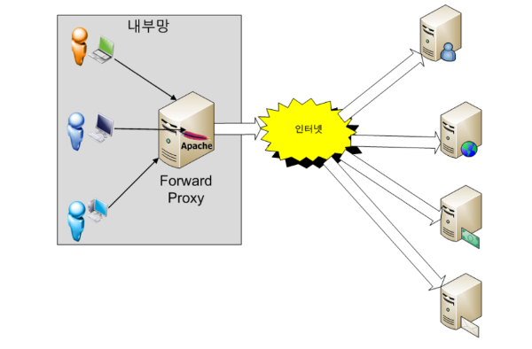
설명
- 클라이언트와 접근하려는 리소스 사이에 위치한다
- 웹에 요청 시 해당요청을 내부PC 에서 하는게 아나라 프록시 서버에서 요청하여 그 결과를 리턴해준다 즉, 요청을 프록시 서버가 케치하는
- 즉 서버쪽에서는 PC의 IP 정보가 아닌 프록시 서버의 IP로 요청을 보낸다
- 위 사진에는 내부망 이라고 표현되었지만 프록시 서버에 직접적으로 접근 가능한 경우 외부망도 접근 가능하다
사용이유
케시 사용:- 프록시 서버로 요청한 내용 중 일부를 케싱 하여 재요청시 실제 서버에 요청 되는 트레픽을 줄일 수 있다
클라이언트 보안목적:- 클라이언트 쪽에서 실제 서버에 IP 주소를 노출 시키지 않기 때문에 클라이언트 보안에도 좋다
- 학교나 기관 같은경우 프록시 서버에 룰을 도입하여 인터넷 사용을 제한하기도 한다
우회기능:- 위에서 설명 하듯이 외부 망에서 프록시 서버에 접근하여 프록시를 적용한 경우 네트워크 요청이 모두 프록시 서버를 통해 진행하기 때문에
VPN같은 효과를 누릴 수 있다.
- 위에서 설명 하듯이 외부 망에서 프록시 서버에 접근하여 프록시를 적용한 경우 네트워크 요청이 모두 프록시 서버를 통해 진행하기 때문에
점프서버
서비스들의 외부 접근은 전부 차단하고 같은 네트워크 망에 Proxy Server나 터널링 서버의 외부 접근만 허용한다 각 클라이언트는 Proxy Server나 터널링 과정을 반드시 거치도록 설계한 서버
- 일종의 외부 클라이언트의 게이트웨이 역할을 한다
- 예를들면 MySql 의 포트 3306의 외부 포트를 차단시키고 SSH 포트 22번만 오픈하여 각 클라이언트는 SSH 터널링을 통해서만 접근 가능하도록 설계하는
Revers Proxy
Forward Proxy가 클라이언트 쪽 Proxy 라면 Revers Proxy는 서버 쪽 Proxy
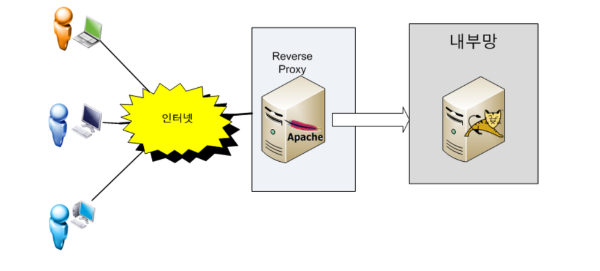
설명
- 프록시를 서버에 적용한 방식
- 클라이언트는 평소처럼 웹에 접속을 하지만 해당 요청은 Revers Proxy 전달되고 해당 요청사항을
WAS나 웹 서버에 다시 전송하게 된다. - 이 경우 본 서버의 IP 주소를 감추는 보안적 효과를 얻는다
사용이유
웹 서비스 통합:- 하나의 서버의 여러개의 웹 에플리케이션을 배포하려면 서로 포트를 다르게 해야한다
- 문제는 HTTP, HTTPS 포트는 80, 433 두개로 표준이 되어있다
- Proxy 서버 하나를 80 포트 또는 433 으로 호스팅하고
- 요청된 엔드포인트가
api/1일경우 해당하는 서버에 전달하고 다른 엔드포인트가 오면 또 해당하는 서버에 전달하는 식으로 구성하여 해결한다.
트래픽 관리:- 본 서버를 여려개를 둔 경우(약간 메이플 처럼) 프록시 서버쪽에서 원할한 서버를 찾아 연결시켜 주어 분산화 작업이 가능하다.
- 또 클라이언트에 지역을 파악하여 가장빠른 서버로 매칭 시켜줄 수도 있다
서버 보안목적:- 실제 서버를 감출 수 있기에 프록시 서버가 해킹 당해도 본서버만 멀정하면 복구가 수월하다
SOCKS5
프록시 서버 ←> 서버 ←>클라이언트 의 사용되는 프로토콜
- HTTP 그 아레단 에서 작동한다
- TCP, UDP를 통해 네트워크 패킷을 전달하는 프로토콜
QoS (Quality of Service)
참고자료
한정된 네트워크 자원 내 사용자 관점에 네트워크 서비스 품질 향상을 위한 기술
우선순위에 따라 트레픽과 대역폭을 관리하게 된다.
에를들어 특정 서비스에 네트워크 품질을 향상 시키려면 다른 서비스나 OS상에서 돌고있는 서비스들에 우선순위를 낮추고 해당 서비스의 우선순위를 높혀서 먼저 처리할 수 있게 끔 설정한다.
즉 QoS를 설정한 서비스 외에 모든 서비스의 네트워크 품질이 떨어진다는 해석을 할 수 있어서 신중하게 설정해야 한다.
통신사에서 네트워크 속도를 제한할때도 QoS를 사용해서 처리 우선 속도를 해당 수준만큼 낮춘다.
작동 원리
보통 패킷이나 프레임에 특수 해더를 내포하여 이 패킷이 QoS 패킷이라는 정보를 내포 하도록 설계 됨
목적지 까지 거치는 라우터들이 QoS를 지원하면 QoS패킷을 가장 상위 우선순위 대역폭에 할당하여 빠르게 처리할 수 있도록 지원하게 됨
외부 네트워크에서는 ISP가 QoS를 제대로 지원하지 않는 경우가 있고, 있더라도 데이터 센터에서 오는 트래픽을 우선 처리해주는 경우도 있어서
상황에 따라 크게 지연 속도가 향상되기도 하지만 반대로 크게 상관없는 경우도 있다.
내부 네트워크/외부 네트워크
내부 IP, 외부 IP의 대역
만약 내가 할당받은 내부 IP가 192.168.0.2라고 치자
근데 인터넷에서 내가 사용하고 싶은 서비스에 외부IP 주소가 192.168.0.2 라면
어떤 일이 발생하겠는가?
그래서 내부IP 주소로 할당할 수 있는 IP 범위는 다음으로 제한되어있다.
| IP 주소 | CIDR |
|---|---|
| 10.0.0.0 ~ 10.255.255.255 | 8 |
| 172.16.0.0 ~ 172.31.255.255 | 12 |
| 192.168.0.0 ~ 192.168.255.255 | 16 |
| 외부 IP 주소는 저 대역과 특수 IP를 제외한 모든 IP를 사용할 수 있다. |
만약 이걸 무시하고 외부IP 대역과 내부IP 주소가 충돌한다면 내부 IP망을 우선 시 되긴 할텐데 에초에 이렇게 충돌되게 설정이 불가능 하다.
이렇게 사용할 수 있는 범위가 한정적이다 보니 내부 망에서도 서브넷을 분리하는 이유가 여기에 있다.
내부 네트워크에서의 외부 IP
- 공유기에 묶인 모든 장치의 외부 IP 주소는 같다.
- 나가는 통신의 경우 아래 NAT 기능이 있어서 문제가 없는데
- 여기서 가장 큰 문제가 바로 서버를 구성할 경우인데
- 외부 IP 주소는
222.253.0.1이라고 가정한다 - 각각 같은 공유기에 묶인 PC 2대가 80포트로 서버를 실행한다 치자
- 그럼 외부에서
222.253.0.1:80포트로 접속을 시도하면 어떤 서버로 들어 가져야 하는 것일까?
- 외부 IP 주소는
- 해결 방법중 하나는 공유기 포트포워딩을 하는것이다
- PC1의 IP를
192.0.0.1, PC2의 IP를192.0.0.2로 가정한다 - 외부포트
100을192.0.0.1에 내부포트80으로 - 외부포트
101을192.0.0.2에 내부포트80으로
- PC1의 IP를
- 그러나 이 방법은 외부 접속시 포트가 달라지는 거라 그게 싫다면 리버스 프록시를 고려 할 수 있다
DHCP (Dynamic Host Configuration Protocol)
TCP/IP 주소와 각종 프로토콜 설정을 자동적으로 재공해주는 프로토콜 IP주소를 유동적으로 관리해 준다
- 주로
내부 내트워크안에있는 기기들의 ip 주소를 관리해 준다- 외부 망에서도 사용하긴 하는데 이건 ISP들이 관리하는거라 논외다
원리
- 클라이언트에게 ip 할당 요청이 들어오면 ip 를 부여해 준다
- IP 주소 할당은
임대기간이라는것을 정해놓고 그기간동안 ip를 할당한다
주의점
- IP 주소를 유동적으로 관리하기 때문에 서버를 굴릴꺼면 DHCP 를 끄는것이 좋다
Gateway (게이트웨이)
외부 네트워크와 통신하기 위에서 반드시 거쳐야 하는 지점
- 하드웨어 형태로 존재하지만 보통 공유기에 내장
192.0.0.1같이 끝에 1비트만 1로 두는 형태- 공유기에 경우 보통 관리자 페이지가 서비스 되고 있다
- 공유기에 연결된 장비가 직접적으로 외부랑 통신하는게 아니라 게이트웨이를 거쳐서 진행된다 즉 서로와 서로의 게이트웨이 끼리에 통신을 하는것이다.
NAT (Network Address Translation) & 게이트웨이
하나의 외부 IP 주소를 가지고 여러 내부 네트워크 통신을 컨트롤 하는 기술
- 공유기를 사용하는경우 위처럼 외부 IP 주소는 딱 하나다.
- NAT 은 모든 내부 장치들이 하나의 외부 IP를 가지고도 통신할수 있게 하는 기술이다
- IPv4 주소가 소멸하지 않는 이유는 이 NAT 의 존재 덕분 이라고 할 수 있다
작동원리
외부로 나가는 통신:- 특정 장치가 패킷을 전송하면
공유기가 해당 내부IP 주소와 포트를 기억 - 공유기는 해당 정보를
NAT테이블에 저장했다가 응답이 돌아오면 다시 원래의 내부 주소와 포트로 변환한다. - 즉 전송 포트번호를 다르게 하여 구분한다는 것이다
- 특정 장치가 패킷을 전송하면
외부에서 들어오는 통신:- 목적지 IP 주소와 포트번호를 공유기가 받아서
NAT테이블울 참조하여 적절한 장치에 반환시킨다.
- 목적지 IP 주소와 포트번호를 공유기가 받아서
인터넷 게이트웨이
기본적인 네트워크와 인터넷 간의 연결을 제공
- 클라우드 컴퓨팅의 VPC 환경이나, 공유기를 사용하지 않고 ISP 에 직접적으로 IP 주소를 할당받는 경우
- VPC 자체의 NAT 게이트웨이를 두지 않고 EC2 같은 단일 서비스에 공인 IP 주소를 할당 받는 상황
외부 IP 주소 고정
결론부터 말하면 공짜로는 못한다
- 공인 IP는 ISP 업체로부터 IP를 할당 받는 방식이라 맘대로 설정할 수 없다
- DDNS를 쓰든 따로 연락해서 구매하여 써야 한다.
- 근데 나의 경우 일정 기간동안 쓰니까 몇년째 IP가 고정되었다…
라우팅 & 포워딩
- 라우팅은 L3 (네트워크 계층), 포워딩은 L2 (데이터 링크 계층)
라우팅
- PC가 NIC 계층에서 물리적으로 전송되어 그 정보를 라우터가 받았다 치자
- 라우터는 PC NIC계층에서 온 프레임해더에 MAC 주소와 자신의 MAC 주소를 비교하게된다 여기서 동일한 MAC 주소가 나오면
- 디캡슐링 과정을 통해 IP를 추출하게되어 실제 라우팅 과정이 진행 된다
OSI 7계층 | TCP/IP 계층
패킷이 출발지로 부터 도착지 까지의 경로로 설정하는 과정
라우팅 테이블
목적지 까지 갈수있는 경로들을 모아놓은 테이블
| 목적지 | 넷마스크 | 게이트웨이 | 인터페이스 |
|---|---|---|---|
| 192.168.1.0 | 255.255.255.0 | 192.168.2.1 | eth0 |
| 10.0.0.0 | 255.255.0.0 | 10.0.1.1 | eth1 |
| 0.0.0.0 | 0.0.0.0 | 192.168.2.1 | eth0 |
| 예시: 192.168.1.0 으로 패킷이 나가야 되면 192.168.2.1 로 이동해야함 |
정적 라우팅:- 직접 라우팅 테이블을 건드려서 아예 다른 네트워크를 거치거나
- 아예 목적지 주소를 바꿔 버릴 수 있음
동적 라우팅:- 라우터들끼리 알아서 정보를 교환하여 자동으로 최단 라우팅을 설정하는 방법
- 이때
OSPF,BGP,RIP같은 라우팅 테이블 생성알고리즘이 작동하게 된다
포워딩 (스위칭)
포트포워딩과 다른 개념이니까 오해하지말자
- 포워딩은 라우팅이 경로를 설정한다면 포워딩은 실제로 패킷이 이동하는 작업이다.
- 이 작업은 스위치가 진행한다. 보통은 라우터 안에 스위치 기능이 포함되어 라우팅 이후에 스위칭이 진행된다
포워딩 테이블
| MAC 주소 | 포트 | 타이머 |
|---|---|---|
| 00:1A:2B:3C:4D:5E | 1 | 300s |
| 00:1F:2E:3D:4C:5B | 2 | 200s |
| 00:1B:2A:3E:4F:5D | 3 | 150s |
- 라우터가(네트워크 계층) 경로를 결정하면
ARP과정을 통해 IP 주소를 MAC 주소로 변경한다 - MAC 주소가 L2스위치(데이터링크 계층)로 전달되고 포워딩테이블을 참조하여 해당 MAC 주소에 패킷을 전달한다
ARP
IP 주소를 실제 MAC 주소로 바꾸는 프로토콜
Who has 192.168.0.10? Tell 192.168.0.1 // 요청
192.168.0.10 is at 1c:1d:3d:5a:f3:24 // 응답
192.168.0.10가 누군지 안다면 192.168.0.1으로 MAC 주소를 보내달라 192.168.0.10에 MAC 주소는 1c:1d:3d:5a:f3:24 이다
송신자는 192.168.0.10를 가진자가 누구 인지를 찾기위해 ARP Call을 브로드케스팅함
이때 자신에 네트워크로 판단하면 게이트웨이 IP 주소를 반환해줌
ARP 패킷에 수신측 MAC 주소는 FF:FF:FF:FF:FF:FF:FF로 설정되는데 해당 패킷을 받은 L2스위치나, 라우터는 연결된 모든 장치에 브로드케스팅을 하게 된다.
주의사항
내 PC에서 나가는 아웃바운드 패킷에 경우 ARP 케싱을 하기 때문에 무조건 ARP Call을 요청하는건 아님!!!
다만 인바운드에 경우 모뎀이나 공유기가 따로 케싱하지 않는이상 대부분 CALL 하게 되어있다
-
ARP 케싱 확인하는 법
arp -a
IP forwarding
리눅스 커널 자체에서 라우팅을 할 수 있는 기능 포워딩은 원래 데이터 링크 계층이라 MAC 주소로 작동하는데 이걸 IP 주소로 포워딩 하게 설계했다 보면됨
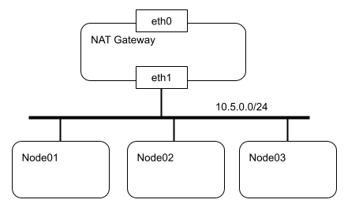
-
해당 구조는 Node1, 2 3 모두 하나의 공유기에 물려있다고 생각하자
-
Node01 에 패킷이 들어오면 IP forwarding 으로 옆에 있는 Node02 에 패킷을 전달하는 역할을 한다
-
그니까 PC를 하나의 라우터로 사용하는 방식인 것이다
응용
- PC1 에서 VPN 서버를 설치, PC1 은 대한민국IP, PC2는 일본IP
- 모종의 이유로 PC2에 VPN 서버를 구성할 수 없다치자
- 그럼 PC2가 PC1에 VPN 클라이언트로 연결하여 PC1의 내부망으로 들어간다
- 실제 VPN을 사용하려는 클라이언트가 PC1 VPN으로 들어올 경우 PC2 의 네트워크망 즉, 일본 으로 라우팅 되야하는경우 이 기능을 사용해 볼수 있다
포트포워딩
게이트웨이를 통과하는동안 외부에서 접속가능하도록 주소를 변환하는 것
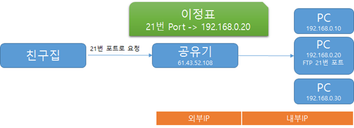
- 공유기로 물린 모든 장치의 외부 IP 주소는 같다
- 그걸 접속포트로 구분하여 매핑시켜준다
DNS (Domain Name System) 서버
DNS 는 도메인 → IP 주소로 바꾸는 역할
- DNS 서버는 도메인 주소를 요청하면 DNS서버쪽 테이블에서 해당 도메인 주소에 맞는 IP 주소를 응답해주는 서버를 뜻함
- 바로 DNS 서버를 거치는건 아니고 단계가 있다
- OS의 Hosts 파일
- DNS 케시
- 그때 DNS 요청
- 국내3사 통신사, 구글, cloudflare 등이 DNS 서버를 가짐
국내 이통사 DNS
인터넷 검열
참고자료
- 우리나라는 인터넷 검열로 음지 사이트 도메인주소는 전부
Warning.or.kr의 IP 주소를 반환하게 설계했다 - 그래서 DNS 주소를 구글(8.8.8.8) cloudflare(1.1.1.1) 로 바꾸면 검열된 사이트를 볼 수 있게 됬었다
- 근데 2019년 인터넷 검열이후로 HTTPS 해더의
Host부분인SNI필드로 검열한다더라
SKT DNS를 쓰면 인터넷이 개느린 이유
답은 간단하게 그냥 평균 IP 반환 속도가 개느리다
- 모든 광고 및 어떤 리소스를 불러와도 인터넷에서는 거의 도메인 주소를 쓴다
- 이때 DNS 서버가 느린경우 도메인 → IP 주소로 변환하는 시간이 느려지면 그 만큼 리소스를 불러오는 속도가 늦어지니까 이다
- 파일 다운로드 하는 경우에도 그렇다. 보통 HTTP 요청할떄 bytes 해더를 써서
바이씩 끊어서 요청하게 될텐데 그럼 그만큼 DNS서버에 IP 반환 요청도 그만큼 할태니 거기서 딜레이가 생기기 때문
Adguard DNS
- 이친구들 DNS 서버는 아예 광고로 파악된 모든 도메인 주소를 쓰레기IP 주소를 반환 하게 설계해서
- 모든 광고를 차단하게 된다
VPN (Virtual Private Network)
참고자료
Private Network란?
공유기 등에 묶여 별도에 인바운드 트레픽이 뚫려있지 않은 사설망(LAN) 환경 그 자체
Virtual 이라는 것에서 알 수 있듯이 VPN등장 이전에 일반적인 Private Network는 외부 망에 누군가가 내부 Private Network에 보안 접속을 하기 위해서는 진짜 물리적으로 통신사에 연락해서 사설망과 연결하려는 장치 간에 전용회선에 독점적 권한을 사야 됬다.
당연하지만 거리가 멀어질 수록 가격이 기하급수적으로 상승하였고 속도 또한 미친듯이 느렸다.
민감한 정보로 인해 외부로 포트를 노출 시킨다고 하면 중간자 공격에 매우 취약하기에 이걸 물리적으로 처리하지 않고 소프트웨어를 사용해 해결해 보자고 한 게 VPN 이다.
VPN은 사용자 인증을 담당하는 VPN 서버와, TLS 와 같은 비대칭 암호화를 결합 시켜 외부로 포트를 노출 시켜 외부 접속자와 통신을 하더라도 중간자 스푸핑 공격을 방어하기 위해 개발된 것이다.
VPN의 원리
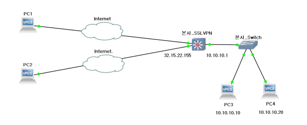 내부 망에 서비스는 건드리지 않고 VPN 서버를 추가하여 해당 서버에 포트만 공개한다
이 과정에서 VPN 서버와 연결하려는 클라이언트 모두 VPN 트레픽이 오갈 가상의 네트워크 인터페이스 드라이버를 설치하게 된다.
클라이언트가 VPN 서버에 접속하기 위해 일종의 인증을 거치고 연결이 되어 두 네트워크 사이 패킷을 이동할 수 있으면 이게 터널링 이다.
일반적으로 PC에 가상 네트워크 인터페이스를 설치하는 경우가 3, 4계층 에서 작동하는 VPN이고, 아예 VPN이 하드웨어 형태로 나온게 있는데 이게 2계층에서 작동하는 VPN 이다
암호화 과정
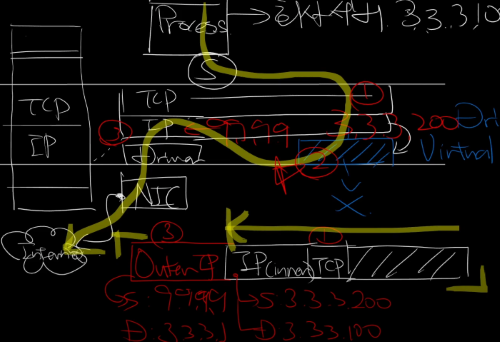 클라이언트가 서버에 패킷을 보낸다 가정하면 먼저 패킷은 VPN 터널의 네트워크 인터페이스로 가게 된다.
여기서 출발지 IP 주소는 자신의 VPN IP 주소가 되고 목적지는 해당 VPN 서버 내부 망에 존재하는 서비스 IP 주소일 것이다.
가장 핵심은 이 패킷을 VPN 터널은 싸그리다 암호화 시켜버려서 하나의 패킷으로 다시 생성한다
해당 패킷을 원래 물리 네트워크 인터페이스에 전달하는데 이때 출발지 IP 주소는 실제 사용되는 내부 IP 주소이며 목적지 IP 주소는 VPN 서버의 게이트웨이가 된다
패킷이 게이트웨이에 도착을 하면 VPN 서버는 겉에 IP 해더를 제외한 나머지 부분이 암호화 되어있다는 것을 알고 있으니까 사전에 공유된 공개키로 복호화를 하게 된다.
그럼 이 패킷이 도착할 원래 IP 주소를 목적지 IP 주소로, 자신의 실제 내부 IP주소를 출발지 IP 주소로 하여 해당 IP로 패킷을 전송하게 된다.
즉 인터넷에 보내지는 패킷에 입장에서 모든 패킷에 목적지 IP 주소는 VPN 게이트웨이가 될 것 이며 내부에 데이터는 암호화 되어 보내지게 되는것이다.
라우팅
VPN 터널로 오는 모든 트래픽을 VPN 인터페이스가 담당을 하는데, 이게 무엇을 의미하냐면 VPN 서버 내부에 호스팅 되는 모든 서비스는 실제 물리 네트워크 인터페이스 상에서 돌아간다
- 실제 물리 LAN 주소: 192.168.0.2
- VPN 주소 주소: 10.0.0.2
위 예시로 PC에서 8080으로 호스팅 하고있는 서비스는 192.168.0.0 네트워크만 접속이 가능하다
VPN 클라이언트로 연결된 두 장치에 IP 는 다음과 같다고 하자
- PC1: 10.0.0.2
- PC2: 10.0.0.3
그럼 PC1과 PC2 두 서비스간 자유롭게 통신이 가능하다 즉 원래는 해당 망에 접속 된 클라이언트 끼리 통신을 하기 위해 설계가 된 것이다.
하지만 여기서 서버에 라우팅을 수정하여 VPN 인터페이스로 도착한 패킷을 기존에 사용하는 물리 네트워크 인터페이스에 패킷을 라우팅 하는경우
우리가 일반적으로 사용되는 IP 우회가 가능해져서 해당 IP로 인터넷 사용도 가능해지고 192.168.0.0 대역에서 호스팅되는 서비스에도 접근 가능하다.
해외 VPN을 사용하면 해외 망 이용속도가 빨라지는 이유
보통의 VPN 서버들은 클라우드 서비스에서 작동한다. AWS 같은 대형 클라우드 서비스는 해당 지역과 직통 회선을 뚫어 놓는 경우가 있으며 통신사가 QoS 를 보장하고 있기 때문에 지연속도가 빨라질 수있다.
즉 일반 가정용 인터넷은 라우팅 과정에서 한참을 해맬수 있기 때문이다.
그럼 이런 결론이 나오는데 클라우드 서비스를 사용하지 않고 자체 서버를 해외에 구축 한 VPN 서버에 경우 속도향상은 개뿔 VPN 터널로 인한 오버해드만 무진장 발생할 수 있다.
프록시랑 차이
프록시와는 작동 계층이 다르다
프록시는 L7 즉 응용계층에서 작동하여 웹 브라우저나 프록시를 설정할 수 있게 설계된 프로그램에서만 동작을 한다.
VPN은 운영체제 내부에 가상 드라이버 형태로 작동하여 모든 트레픽을 다른 서버를 거치게끔 하는게 가능하지만 프록시는 해당 프로그램이 지원하냐에 달려있다.
케스팅
유니케스팅 (Unicasting)
하나의 송신자가 하나의 수신자에게 통신 서버-클라이언트 통신 또는 PC1-PC2 통신
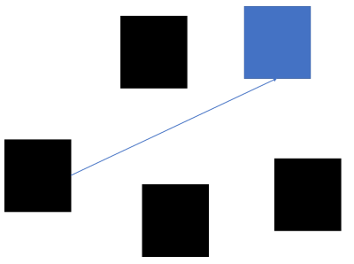
- 대부분에 인터넷 통신에서 사용되며 별일 없으면 이 방식으로 통신한다
- 같은 서브넷에서의 통신은 별도에 공유기나, 라우터를 거치지 않고 다이렉트로 통신한다
브로드캐스팅 (Broadcasting)
하나의 송신자가 연결된 모든 장치에 통신 1:N 통신
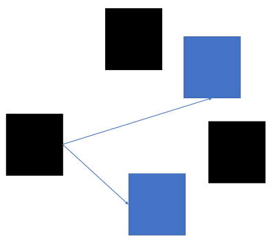
- 하나의 송신자가 연결된 모든 장치들에 데이터를 전송한다
- 당연하게도 네트워크에 연결된 장치가 많아지면 많아질 수록 성능이 저하된다
- 인터넷(외부IP) 에서는 작동하지 않으며 별도에 공유기나, 라우터를 거치지 않는다
- 라우터가
ARP를 사용하거나DHCP할당에 쓰인다
멀티캐스팅 (Multicasting)
그룹 가입이라는 시슽템을 두어 그룹에 있는 장치와 통신

- 브로드캐스팅과는 다르게 연결된 장치들 중에서 그룹 가입을 한 장치들 한테만 전달한다
- 인터넷(외부IP) 에서도 작동하며 같은 서브넷에서의 통신은 별도에 공유기나, 라우터를 거치지 않고 다이렉트로 통신한다
- IPTV 에 사용되는
IGMP프로토콜이 해당 방식을 사용한다
애니케스팅 (Anycasting) (IPv6)
가장 가까운 장치에게 전송 IPv4 에서는 베타 지원
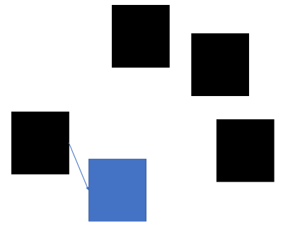
- 요즘 많이 사용하는 CDN 서버에 핵심 기술로 로드벨런싱 같은 분산 처리할때 많이 쓰인다
GSLB (Global Server Load Balancing) & CDN (Content Delivery Network)
GSLB
여러 서버의 트래픽을 전세계로 분산시키기 위한 기술
- 이렇게 함으로서 각 사용자들에게 적절한 서버를 선택하여 응답을 주거나
- 상태가 어떠한지 Health Check 를 진행한다
CDN
물리적으로 멀리 떨어저 있는 사용자가에게 서비스를 빠르게 제공하려고 고안된 시스템 방법론
- 본 서버 1개(CDN DNS 서버)랑 전세계에 분산시켜놓은 케시서버 여러대를 설치한다
- CDN은 하나의 기술을 특정하는 용어가 아니라 지리적 분산, 캐싱, 부하 분산, 라우팅 같은 개념을 적용한 시스템을 의미하는 것이다
- 그러니까 어떤 기술을 쓰건 CDN에 부합하게 결과가 나오면 그게 CDN 인것이다
동작 원리
- 클라이언트가 접속을 하면 DNS 서버에 요청을할텐데
- DNS 서버는 CDN의 DNS 서버 IP 주소를 반환한다
- 원래 DNS 서버와 같은 느낌에 서버가 아니라 실제 물리 서버임
- CDN DNS 서버는 사용자 IP 주소를 파악해서 가장 가까운 서버의 주소로 리다이렉션을 시켜준다
정리
- GSLB는 CDN 방법론의 핵심 기술인 것이다, 즉 CDN의 부분집합 관계인 것이다
- GSLB로 트래픽이 높거나 장애가 생긴 서버를 피하고 다른 CDN 기술들로 그 중에서 가장 사용자와 가까운 서버를 찾게 되는것이다
L1 관점에서 본 네트워크 신호 전송 원리
상위 계층에서 프레임을 전송하면 해당 프레임이 랜카드에 전송되면 랜카드는 해당 프레임을 2진법 신호로 변환하여 UTP케이블등을 통해 전류를 흘려보낼 것이다.
여기서는 어떻게 신호로 변환되며 신호를 어떻게 처리하는지를 서술한다
Encoding (부호화)
참고자료
이진법 데이터를 아날로그 신호로 바꾸는 방법에 대해 서술한다

맨체스터 인코딩
예를 들어 하나의 비트를 표현하려면 1초 시간 내의 5V 에 신호를 전송해야 한다고 치자
0을 전송하고 싶다면 0.5초 동안 5V에 전압으로 전송하고 남은 0.5초는 0V 로 복귀 시킨다
1을 전송하고 싶다면 0.5초를 0V 전압으로 대기 한 뒤 0.5동안 5V 전압을 전송하게 되된다.
해당 방법은 10Mbps급 이더넷에 사용되었던 방식이라 지금은 쓰지 않고 있다. 이외에도 여러 방법들이 있다.
시간/공간 분활 (다중화 기술)
하나의 공유기에 100개의 장치가 연결되어있고 100개의 장치 모두 동시에 인터넷 통신을 한다고 가정해보자.
그럼 100개의 패킷을 받은 공유기는 다음 목적지 라우터에 하나의 회선으로 보내야 될텐데 문제는 그냥 동시에 보내버리면 신호의 간섭이 생겨버린다.
이걸 처리하는 방법이 시간/공간 분활에 대한 문제이다.
진폭 변조/주파수 변조
부호화에서 5V 전압으로 예시를 들었는데 이 전압을 각 송신자에 따라 다르게 부여 하는것이다.
예를들어 1번은 2V로 2번은 5V로 해서 받는 수신자는 해당 전압을 판단해서 어떤 송신자인지 할 수 있게 된다.
이것을 진폭 변조라고 한다.
또한 부호화 예시에서 하나의 비트를 표현하는 시간을 1초로 예시를 들었는데 이것에 시간을 다르게 하여 송신자를 구분하는 것이 주파수 변조 이다
TDM (시분활 다중화)
시간에 따라 채널을 구분하는 것
이것은 하나의 회선에서 하나의 신호만 전송할 수 있게 재한 하는 방식이다.
송-수신 측이 하나의 신호를 받는 시간을 정하고 정해진 시간 만큼 신호를 보내게 된다. 전송이 끝나면 다음 사이클에서 또다른 송신자에 신호를 전송하고 다시 넘기고 이렇게 흘러간다.
FDM (주파수 분활 다중화)
앞서 설명한 주파수 변조를 사용하여 여러개의 채널을 구분하는 것
송신자들에 주파수를 다르게 설정하여 하나의 회선에 동시에 보내도 문제 없게 끔 만들어 준다.
CDM (코드분할 다중화)
TDM+FDM
현재 네트워크에서는 두가지 방식을 합친 CDM을 사용한다
전이중 통신
송-수신 회선을 각각 따로 사용하는 것
요즘 네트워크는 대부분 전이중 통신으로 송-수신 신호 간에 통신에는 간섭 문제가 발생하지 않는다.
또한 아예 송-수신 회선을 더 많이 뚫어서 물리적으로 동시 전송을 가능하게 하기도 한다.
CSMA/CD
다중화 기술과 전이중 통신이 나오기 이전에 쓰였던 초기 이더넷에 신호 간섭 문제 해결 프로토콜
현재는 사용하지 않으므로 크게 중요하진 않다.
과정
통신하고 싶은 PC는 먼저 네트워크 상에 통신이 일어나는지를 확힌한다 (Carrier Sense)
네트워크 통신이 일어나고 있으면 (캐리어가 감지되면) 데이터를 보내지 않고 기다리고 네트워크 통신이 일어나고 있지 않을 때 (캐리어가 감지되지 않으면) 데이터를 보낸다.
만일 케리어가 감지되지 않을때 두PC가 동시에 데이터를 전송한다면 충돌이 일어난다. 이것을 Multiple Access라고 한다 두 PC는 다시 랜덤한 시간동안 기다렸다 다시 데이터를 전송한다
네트워크 장비
참고자료
L1
허브
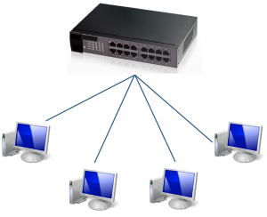
단순히 컴퓨터와 컴퓨터를 이더넷으로 이어주는 장치
허브는 스위치랑 연결 방식은 비슷하지만 라우팅과 게이트웨이라는 개념이 존재하지 않는다.
따라서 연결된 모든 장치는 특정 장치가 패킷을 받을경우 허브는 그냥 그걸 모두에게 브로드 케스팅 해버린다. (목적지가 누구인지를 모르니까)
그래서 허브는 단순히 전기 신호를 전달해주는 역할이다. 사실상 이런 문제로 인해 스위치에 밀려서 거의 사용되지 않는다
리피터
리피터는 사실상 허브에서 분배 기능을 제외하였다고 봐도 무방하다. 하나의 네트워크에서 나온 신호를 증폭해주는 역할을 한다.
모뎀 (최근 L2, L3)
ISP로부터 받은 아날로그 데이터를 디지털로 변환 또는 그 반대 역할을 수행한다.
외부 네트워크 특성상 내부에서 사용하는 UTP 케이블이 아닌 광케이블을 사용하게 된다.
여기서 UTP는 전기신호를 매게로 하고 광케이블은 빛의 신호를 메게로 한다.
즉 디지털 신호로 통신하는 UTP, 아날로그 빛의 신호로 통신하는 광케이블 둘 간에 신호 변환을 담당한다
근데 최근 나오는 통신사 모뎀들은 라우터 기능까지 달려있는 경우가 대부분 이지만 일단 모뎀 자체의 기능은 L1에 가깝기 때문에 여기다 서술하였다.
L2
L2 스위치 (스위치 허브)
허브와 달리 스위치는 MAC 주소까지 디캡슐레이션을 하여 해당 MAC주소로 패킷을 전달해 주는 장비이다.
L3, L7 스위치도 존재하지만 보통 스위치라 함은 L2 스위치를 의미한다. 기본적인 기능은 ARP테이블을 관리하고 해당 테이블 기반으로 패킷전달을 한다.
라우터와 공유기와는 다르게 게이트웨이(L3) 개념은 존재하지 않아 자체적으로 IP를 할당받지 못하며 인터넷 WAN 케이블을 그대로 스위치에 보통은 연결 하면 단 하나의 장치만 인터넷 사용이 가능하다. (단 ISP가 모든 장치에 공인 IP를 할당 해 줄수있는 상황이면 가능하다)
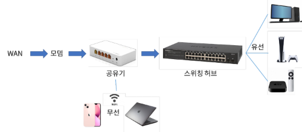 따라서 보통 스위치는 위에 처럼 구성한다.
오해 하면 안될것이 스위치에 연결된 모든 장치들은 각각의 다른 IP주소를 가질 수 있다.
보통 연결된 각 장치가 IP할당 요청을 하는 구조라 스위치는 해당 요청만 재대로 전달하면 공유기가 IP할당을 해서 MAC주소로 관리되기 때문이다.
또한 스위치는 사실상 스위치 허브랑 동일한 용어다. 원래는 허브를 부르는 말이 스위치 허브였는데 지금은 그냥 스위치로 의미가 바뀐거 같다.
브릿지 (사실상 스위치)
사실상 스위치의 하위 호환이라고 봐도 무방하다.
브릿지는 일반적으로 2개의 포트를 가지며 네트워크를 연결하는 간단한 기능만 제공하고 있다.
사실상 스위치=브릿지 라고 생각해도 무방하다
L3
라우터
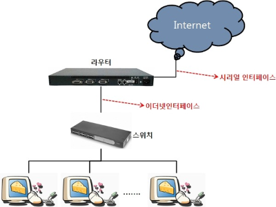
IP 기반으로 패킷이 가야될 최적에 경로를 지정하고, 데이터 패킷을 전달하는 장치
L3 이므로 라우터 본인이 IP를 할당받을 수 있으며 해당 IP를 연결된 LAN 장치들은 NAT을 통해 하나의 외부 IP를 할당 받아 사용할 수 있다.
연결방식과 작동구조는 L2스위치와 유사하지만 조금 더 많은 기능을 제공하는 장치이다.
라우팅과 기타 부가 서비스 (VPN 연결, QoS 등)기능들을 제공된다.
사실 L2스위치 없이 라우터만 있어도 라우터가 스위칭 까지 하므로 스위치를 살빠엔 라우터 사는게 맞지 않냐라고 할 수 있는데 내부 망 포트 확장 목적으로 라우터를 사봤자 상위 계층까지 디캡슐레이션 해야되므로 오버헤드만 증가하니 이럴 땐 L2스위치만 사는게 좀 더 빠르다.
L3 스위치 (사실상 라우터)
L2 스위치 기반으로 라우팅 기술을 추가한 장비
현재는 L3 스위치를 라우터로 봐도 무방하다
근데 라우터에서 기능을 좀 제거하여 그냥 라우팅만 하는 친구로 만든게 L3 스위치이다.
그래서 라우터 보다 좀 더 저렴하고 라우팅과 스위칭에 특화된 기술만 들어간 친구가
L3 스위치 였는데… 지금은 그냥 똑같아 졌다.
다나와 제품 검색 결과 라우터쪽이 포트가 더 적고, 스위치 쪽은 포트가 좀 더 많이 존재하는 차이가 있는거 같다
공유기 (라우터에 기능 추가한거)
라우터에서 가정용으로 쓰기 좋은 기능을 추가하고 라우팅 기능을 간소화 한 것
라우팅 설정은 간편화 하고, 가정이나 소규모 네트워크에서 쓸만한 기능들 좀 더 추가하여 만든 라우터가 공유기 이다.
지금은 무선 Wi-Fi를 지원하면 공유기로 보고, 아니면 라우터로 보는 이런 추세 인듯하다.
L4~L7
L4/L7 스위치
서버에 부하 분산이나, 하드웨어 방화벽 역할을 함
IP + 포트번호 기반 참조 지원 시 L4로 HTTPS/HTTPS등과 같은 프로토콜 기반까지 같이 참조하면 L7
서버 앞단에 성능저하 없이 보안수준을 끌어 올리거나 로드벨런싱 할때 사용하는데 예시로 통신사가 SNI 필드 검증을 하여 인터넷 검열을 수행할 때 해당 장비를 사용한다.
기본 가격이 100만원은 훌쩍넘어서 개인이 사용하기에는 꽤나 부담스럽다
HFC / FTTH
ISP의 인터넷의 전송방식
HFC (Hybrid Fiber Coaxia)
비대칭 인터넷 (유사광랜)
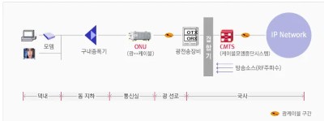 구형 인터넷 구축 방식, 광케이블을 아파트나, 주택 지하에 구내 증폭기에 연결하여 구내 증폭기는 분배기를 이용하여 각 세대에 인터넷 케이블을 보급하는 구조
인터넷 사용 시 주파수 다운로드 채널을 업로드 채널보다 더 많이 배치하여 비대칭 인터넷 문제로 인해 논란이 많은 친구다.
2000년대 이전 아파트는 해당 방식일 가능성이 높다.
FTTX (Fiber To The x)
대칭 인터넷 (광랜)
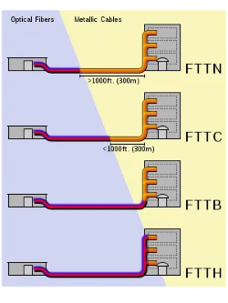 광케이블을 어디까지 보내느냐의 대한 기술 이것을 보통 부르는 광랜 이라고 함
FTTN: 전신주나 길가에 광케이블이 깔리고 집안까지는 랜선이 들어오는구조FTTB: 건물 까지만 광케이블이 들어가있는 구조, 아파트 지하나, 관리사무소 쪽에 통신 배전반이 설치되고 해당 배전반에서 랜선으로 보급 해주는 방식FTTH: 직접 광케이블을 가정내에 보급하는구조, 최근 건설된 아파트나, 1G 이상의 기가인터넷에서 많이 쓰인다.
대부분의 구축 아파트가 FTTB 수준인데 보급되는 LAN선이 CAT.5 수준밖에 안되는 경우가 있다. 이럴 경우 각 가정에서 증폭 광모뎀을 설치하여 500 Mbps 기가 라이트 인터넷 정도는 이용할 수 있게 된다.
- 우리 아파트도 이런구조인듯 하다
기타
Winodws 공용 네트워크 문제
Winodws내 네트워크 설정이 공용 네트워크인 경우 포트를 열어도 접근이 불가하다 이게 공용 네트워크랑 개인 네트워크랑 방화벽 포트 설정이 달라서 그렇다 따라서 개인 네트워크로 변경해야 함
- 설정 → 네트워크 및 이더넷 → 네트워크 프로필